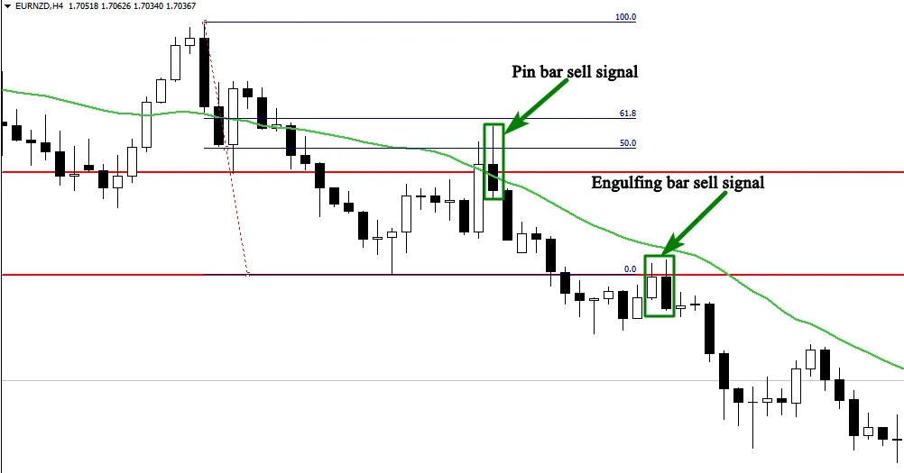

In this section, i will show you different trades examples to help you understand how to trade the market using all the strategies discussed in the previous sections. See the first example below:
As you can see in the chart above, the market is trending down, so as
a price action trader, i will try to follow the trend and look for powerful
signals at the most powerful key levels.
The first signal we got is a pin bar that was rejected from a support
level that becomes resistance.
The second factor that support our decision to sell the market is the
rejection of the pin from the 50% Fibonacci retracement.
The third factor that encourages us to take this signal is the rejection
of the pin bar from the 21 moving average that was acting as a dynamic
resistance level.
The second signal was an engulfing bar candlestick pattern, as you can
see in the chart, this candlestick pattern was formed at a resistance
level in line with the direction of the market.
This is how you can trade trending markets using our price action
signals. It’s simple just identify the trend, and the key levels, it can be
a support or resistance level, a 21 moving averages, or 50% and 61%
Fibonacci retracement.
Wait for a pin bar, an engulfing bar, an inside bar, or an inside bar false
breakout to form near these levels in line with the direction of the
market, and then execute your trade. It’s not complicated.
See another example below:
As you can see in the chart above the market is trading horizontally
between the support and the resistance level.
This market is completely different from trending markets, and the
strategy to trade it must different as well.
In ranging markets, we trade from the boundaries, i mean from
support and resistance levels, don’t never try to trade inside the range.
In the chart above, we had two powerful signals, the first signal was a
pin bar that was strongly rejected from the resistance level, and the
second signal was an inside bar formed near the support level.
See another chart below:
As you can see in the chart above, there are three powerful pin bar signals. When the market approaches the 21 moving average that acts as a resistance level, sellers reject buyers, and form a pin bar that gives us a good entry point.
Now you have the strategies, you know how to analyze the market,
you know when to buy, when to sell, and when to exit, you know also
when to stay away from the market.
This is important for you as a trader to know, but you are still missing
the key to the castle. The money management plan.
The most important thing that traders don’t talk about is the money
management. This is what makes a difference between successful
traders and losers.
If you trade without a money management plan, you are just wasting
your time and money. Because nothing is going to work for you, even
if you have the most powerful trading system in the world.
Most traders focus on how to enter the market, they spend months
and years looking for the right system. i don’t want you to think like
them, you should think differently if you want to become a successful
trader.
Money management: Position sizing
One of the most important component of money management is
position sizing, what i mean by position sizing is the number of lots you
are risking per trade.
All forex brokers now offer mini lots as the default position size. The
smallest value for a mini lot is approximately 1$.
There are forex brokers that offer 10 cents for a mini lot which
represent an opportunity for traders who don’t have bigger accounts,
they can begin with 250$, and they still have chance to grow it.
When it comes to position sizing, you should think in terms of dollars
instead of pips. Let’s say you are trading 3 mini lots of CAD/USA, this
means you bought or sold 30.000 worth of us dollars.
If the market moves in your favor, you will win an amount of money
equal to 3$ per pip. If you make 20 pips, you would have profited 60$.
Let’s break it down, 1standard lot is worth about 10$ per pip. And
1mini lot is worth about 1$ per pip, and 1 micro lot is equal to 10 cents.
If you open a mini trading account, you should think in term of the
dollars risked instead of pips.
Let’s say you put 50 pips stop loss and 100 pips as a profit target. This
means that if the market hits your stop loss you will lose 50 pips which
is 50$, and if the market hit the profit target, you will win 100$.
The size of your position depends on whether you have a standard or
a mini account, and how many lots you are trading. This information is
important to you because this will help you know how much money
you risk on each trade.
The risk to reward ratio
The risk to reward ratio concept is what will make you a winner in the
long run. Before you enter any trade, you have to know how much
money you will win if the market goes in your favor, and how much
money you will lose if the market goes against you.
Don’t never enter a trade in which the profit is less than the amount
of money you risked.
If you will risk 100$ for example, your profit target should be at least
200$, this is a risk to reward ratio of 1:2.
Let’s suppose that you took 10 trades with 1:2 risks to reward ratio. In
every trade you risk 100$.
You won 5trades, and you lost 5 trades. So you will lose 500$.but you
will win 1000$.so the benefits is 500$.
This is the power of the risk to reward ratio, you shouldn’t think that
you have to win all your trades to become a successful trader. If you
can take the advantage of the risk to reward ratio, you will always be
profitable.
All good methodologies use stops. A protective stop loss is an order to
exit a long or short position when prices move against you to specified
price.
The stop loss insures against a usually large loss and has to be used in
one way or another.
An initial stop loss can be placed with your order on the trading
platform; the trade will be closed, automatically when if the stop loss
is hit.
This type of stop loss will allow you to execute your trade and go spend
time with your family or friends, this will help you to trade out of your
emotion, because you know how much money you will lose if the
market didn’t go in your direction.
Lot of traders use mental stops, when they enter a trade, they don’t
place a stop loss, because they think that the broker will hit their stop
loss which is not true.
The reason behind using mental stop is the human psychology,
humans hate to lose money. And if you don’t accept losing money as
a part of the game, you will never make money in the market.
Don’t never think of using mental stops, because you can’t control the
market, you can’t be sure that the market will do this or that.
Before you enter a trade, calculate how much you may win, and how
much you may lose. Place your stop loss order. And your profit target.
And forget about your trade.
Don’t ever risk money that you can’t afford to lose
I got lot of questions from traders asking me about how much money
they need to start trading. First of all, you have to take trading as a
business. You can make money in this business and you can lose it as
well.
The amount of money that you need to start trading depends on the
amount of money that you can afford to lose. Don’t ever borrow
money or risk big amounts of money that you can’t afford to lose.
Because trading is all about emotions, if you trade and you are afraid
to lose your trading account, you will fail in this business. Because you
will be controlled by your emotion, and this will affect your trading
decisions.
You will not be able to follow your trading strategy, and you will
certainly fail.
The best thing to do is to start small, try to get as much experience as
you can, and build slowly your trading account. This is how successful
traders become successful.